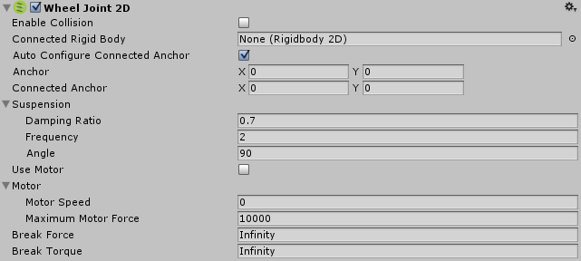

Wheel Joint 2D
Use the Wheel Joint 2D to simulate a rolling wheel, on which an object can move. You can apply motor power to the joint. The wheel uses a suspension "spring" to maintain its distance from the main body of the vehicle.

Properties
| Property: | Function: |
|---|---|
| Enable Collision | Can the two connected objects collide with each other? Check the box for yes. |
| Connected Rigid Body | Specify here the other object this joint connects to. Leave this as None and the other end of the joint will be fixed at a point in space defined by the Connected Anchor setting. Select the circle to the right of the field to view a list of objects to connect to. |
| Auto Configure Connected Anchor | Check this box to automatically set the anchor location for the other object this joint connects to. (Check this instead of completing the Connected Anchor fields.) |
|Anchor |The place (in terms of X, Y co-ordinates on the RigidBody) where the end point of the joint connects to this object. | |Connected Anchor |The place (in terms of X, Y co-ordinates on the RigidBody) where the end point of the joint connects to the other object. |
|Damping Ratio | The degree to which you want to suppress spring oscillation in the suspension: In the range 0 to 1, the higher the value, the less movement. | |Frequency |The frequency at which the spring in the suspension oscillates while the objects are approaching the separation distance you want (measured in cycles per second): In the range 0 to 1,000,000 - the higher the value, the stiffer the suspension spring. | |Angle |The world movement angle for the suspension. | |Use Motor |Apply a motor force to the wheel? Check the box for yes.| |Motor | | |Motor Speed |Target speed (degrees per second) for the motor to reach. | |Maximum Motor Force |Maximum force applied to the object to attain the desired speed. |
|Break Force |Specify the force level needed to break and so delete the joint. Infinity means it is unbreakable. | |Break Torque |Specify the torque level needed to break and so delete the joint. Infinity means it is unbreakable. |
Details
(See also Joints 2D: Details and Hints for useful background information on all 2D joints.)
Use this joint to simulate wheels and suspension. The aim of the joint is to keep the position of two points on a line that extends to infinity, whilst at the same time making them overlap. Those two points can be two Rigidbody2D components or a Rigidbody2D component and a fixed position in the world. (Connect to a fixed position in the world by setting Connected Rigidbody to None).
Wheel Joint 2D acts like a combination of a Slider Joint 2D (without its motor or limit constraints) and a Hinge Joint 2D (without its limit constraint).
The joint applies a linear force to both connected rigid body objects to keep them on the line, an angular motor to rotate the objects on the line, and a spring to simulate wheel suspension.
Set the Maximum Motor Speed and Maximum Motor Force (torque, in this joint) to control the angular motor speed, and make the two rigid body objects rotate.
You can set the wheel suspension stiffness and movement:
Stiff, barely moving suspension...
A high (1,000,000 is the highest) Frequency == stiff suspension.
A high (1 is the highest) Damping Ratio == barely moving suspension.
Loose, moving suspension...
A low Frequency == loose suspension.
A low Damping Ratio == moving suspension.
It has has two simultaneous constraints:
- Maintain a zero relative linear distance away from a specified line between two anchor points on two rigid body objects.
- Maintain an angular speed between two anchor points on two rigid body objects. (Set the speed via the Maximum Motor Speed option and maximum torque via Maximum Motor Force.)
For Example:
You can use this joint to construct physical objects that need to react as if they are connected with a rotational pivot but cannot move away from a specified line. Such as:
- Simulating wheels with a motor to drive the wheels and a line defining the movement allowed for the suspension.
Hints
Wheel Joint 2D behaves differently to the Wheel Collider:
Unlike the Wheel Collider used with 3D physics, the Wheel Joint 2D uses a separate Rigidbody object for the wheel, which rotates when the force is applied. (The Wheel Collider, by contrast, simulates the suspension using a raycast and the wheel's rotation is purely a graphical effect). The wheel object will typically be a Circle Collider 2D with a Physics Material 2D that gives the right amount of traction for your gameplay.
To simulate a car or other vehicle:
Set the Motor Speed property to zero in the inspector and then vary it from your script according to the player's input. You can change the value of Maximum Motor Force to simulate the effect of gear changes and power-ups.
Zero frequency:
Zero in the Frequency is a special case: It gives the stiffest spring possible.